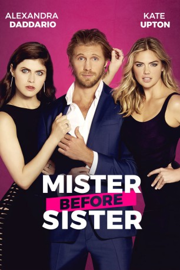

gesehen am 20.07.2018
gesehen am 20.07.2018Alternativ: The Layover gesehen am 20.07.2018
 
 IMDB-Wertung: 4.7 / 10
IMDB-Wertung: 4.7 / 10  Metascore:
Metascore: 
Die beiden Freundinnen Meg und Kate sind seit Kindesbeinen an beste Freundinnen. Beide stecken in sehr tiefen persönlichen Krisen und beschließen gemeinsam auf Urlaub zu fahren und alle Sorgen hinter sich zu lassen. Doch bereits am Hinflug kommt alles anders als geplant. Aufgrund einer Unwetterwarnung wird ihr Flug umgeleitet und zu einem längeren, ungeplanten Zwischenstopp gezwungen. Auf dem Flug lernen die beiden den gutaussehenden Ryan kennen, der zwischen den beiden sitzt. Und schließlich steht er auch zwischen ihrer Freundschaft - denn beide verfallen ihm hoffnungslos...
Jahr: 2017
Dauer: 88 Minuten
FSK: 12
Land: USA Studio: Vertical EntertainmentTonspuren: DTS - ,
Untertitel: Deutsch, Englisch,
Auflösung: 1080p (1920x800) Größe: 8663 MB
Genre: Komödie
Regisseur: William H. Macy
Drehbuch: David Hornsby
Soundtrack: Rob Ellmore, Leah Haywood, Dan Pringle
Darsteller:
 Alexandra Daddario als Kate
Alexandra Daddario als Kate Matt Jones als Craig
Matt Jones als Craig Kal Penn als Anuj
Kal Penn als Anuj Michael Benyaer als Shahar
Michael Benyaer als Shahar Joe Nunez als Flight Attendant
Joe Nunez als Flight Attendant Alvin Sanders als Balloon Pilot
Alvin Sanders als Balloon Pilot Rob Corddry als Principal Moss
Rob Corddry als Principal Moss Molly Shannon als Nancy
Molly Shannon als Nancy Angela Moore als Female Cop
Angela Moore als Female Cop John Cassini als Chuck
John Cassini als Chuck Dean Redman als Hotel Clerk
Dean Redman als Hotel Clerk Carrie Genzel als Buyer
Carrie Genzel als Buyer Mary Black als Meemaw
Mary Black als Meemaw Brian Dobson als Pilot
Brian Dobson als Pilot Jason Simpson als Driver
Jason Simpson als DriverDatei: X:\2017(G-M)\Mister Before Sister (2017, FSK12, 1920x800).mkv seit 20.07.2018
Festplatte: HD 2017(A-Z)-2018(A-F)
 Es gibt insgesamt 148 Filme in der Gruppe '2017(G-M)'
Es gibt insgesamt 148 Filme in der Gruppe '2017(G-M)'